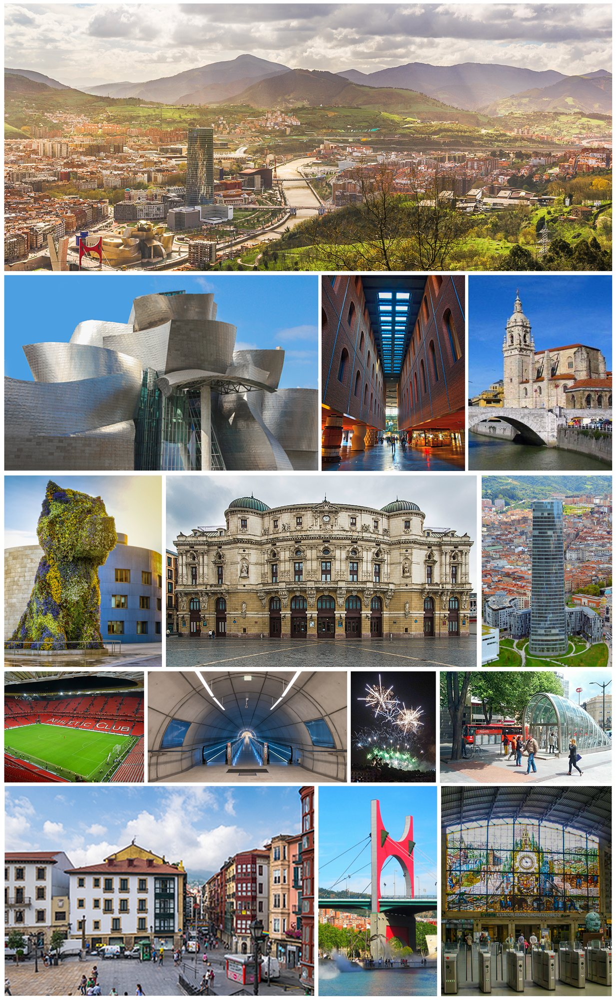

BizkaiaBilbao
Bilbo
The largest city in the Basque Country and its cultural engine. Once a gritty industrial port, Bilbao reinvented itself as a capital of design and art, with a walkable Casco Viejo, a celebrated food scene and riverside promenades that draw you toward the Guggenheim.
CityCulture
Photo: Tommie Hansen, Ardfern, Tomas Fano, 0Igor González Martín, Jesús Ignacio Bravo Soler, Pedro J Pacheco, Irekia/Gobierno Vasco, Euskaldunaa, Basotxerri, Eric Fischer, Tiia Monto, pictures Jettcom y Zarateman · CC BY-SA 4.0